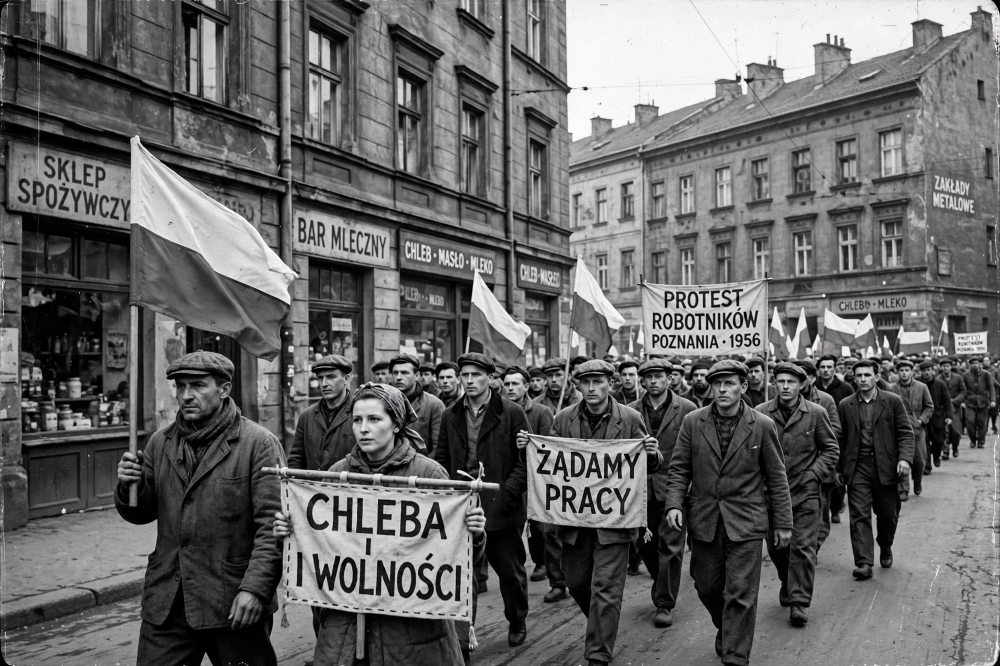

Poznań 1956 protests
| Poznań protests of 1956 | |
| Date | 28–30 June 1956 |
|---|---|
| Location | Poznań, Poland |
| Causes | Wages, work quotas, living standards, political repression |
| Result | Protests suppressed by the army; contributed to the Polish October reforms |
| Deaths | At least 57 (estimates vary) |
The Poznań protests of 1956, also known as Poznań June (Polish: Poznański Czerwiec), were the first of several massive protests by the Polish people against the communist government of the Polish People's Republic. Demonstrations by workers demanding better conditions began on 28 June 1956 at Poznań's Cegielski Factories and were met with violent repression by the army and security forces. At least 57 people were killed, including a 13-year-old boy, Romek Strzałkowski, who became a symbol of the uprising.

Background
After Stalin's death in 1953, and especially after Khrushchev's "Secret Speech" in February 1956, discontent grew in Poland over low wages, rising production quotas, poor housing, and shortages. Workers at the Cegielski metal works (then named for Stalin) sent a delegation to Warsaw over wage deductions; when their demands were rebuffed and a minister's promises were reversed overnight, the workforce walked out on the morning of 28 June.
Events
Some 100,000 people gathered in the city center, initially marching peacefully with slogans such as "We want bread" and "Out with the Russians". The crowd freed prisoners from a jail, stormed the local headquarters of the secret police (UB), and fought pitched battles. The government deployed some 10,000 soldiers and 400 tanks under Gen. Stanisław Popławski; firing continued into 30 June. Official figures put deaths at 57, though estimates range higher; hundreds were wounded and hundreds arrested.
Aftermath
Prime Minister Józef Cyrankiewicz notoriously threatened that any hand raised against the people's government would be "chopped off". Yet the protests shook the regime: within months the Polish October brought Władysław Gomułka back to power on a wave of public support, yielding greater autonomy from Moscow and easing of repression — a contrast with the simultaneous Hungarian Revolution, which was crushed. In 1981, under Solidarity, the Poznań Crosses monument was unveiled in the city; 28 June is now a Polish national day of remembrance.